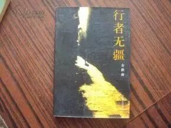
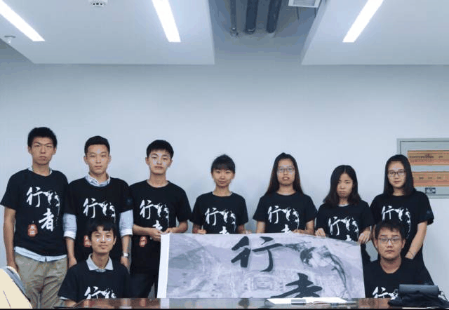
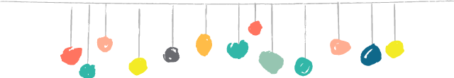
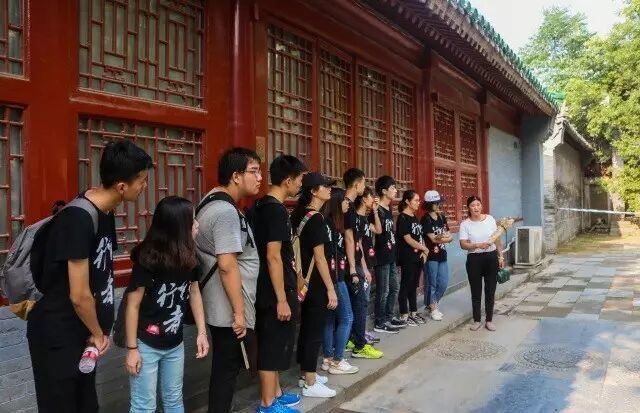
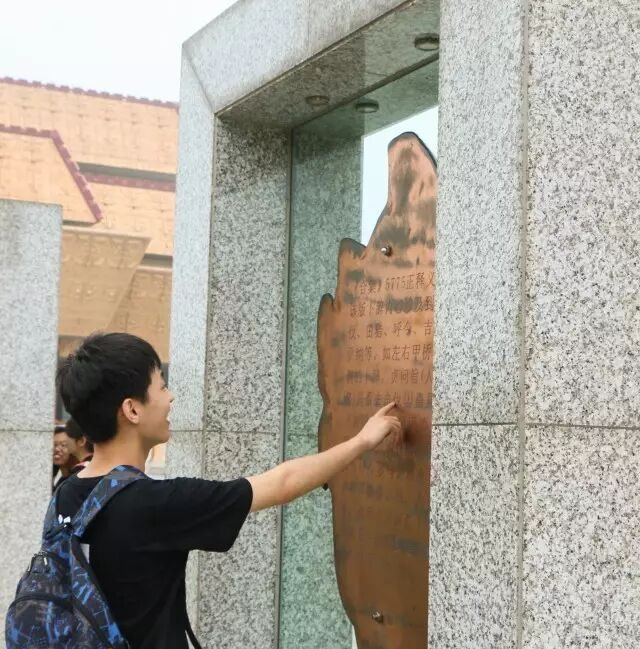

【行者明信片·拾壹·仁者无敌，行者无疆】

行者无疆
白布局，
-
白布局，
仁者无敌，行者无疆
——“二傻”丁泳文

初识
我与“行者无疆”可以说有很长的渊源。初遇“行者无疆”，是一次无意间在一个旧书店里翻书的时候，被一本连封皮都没有的旧书所吸引，当时只是随便翻了翻，但是逐渐被其中的内容所吸引，买下来之后在不知道名字的情况下，花了一下午的时间看完了，最后才知道了这本书的名字:《行者无疆》，余秋雨先生的作品。当时毫不犹豫的选择我们这个团队，就是因为这个名字吸引了我，敢于用这四个字命名，其本身就是一种文化底蕴的体现……
出发前
选择坐火车
开始的开始，大家还很拘谨

刚进入这个团队的时候，因为大家之间的了解很少，互相之间特别拘谨。随着几次开会时的交流，大家彼此开始熟悉，说话虽然不像之前那样客套但是却也并不像真正朋友之前那样随意。在最后选择交通方式的时候，种种原因之下，我们选择了一起坐硬座。虽然大家当时抱着“坐硬座忍一忍就过去了”的心态。但是我后来真心的庆幸这个决定，在火车上的那一段时间，是我们最快乐的时光，相反如果是硬卧，大家肯定会一路无话，睡到终点吧。

行者“碎碎念”

第一次开会的“大风吹”；
临出发在学校西门章静奇妙的眼神；
在火车上给沫如还有浩然安利的动漫；
梓腾那仿佛在祈祷什么的睡姿；
刚出火车站时的无头照；
刚到宾馆时的欢呼；
在安阳早早起床吃的扁粉菜；
在文字博物馆人格魅力满满的的讲解员；
在嵩阳书院和保安兼讲解员的斗智斗勇；
那两棵沫如亲自讲解的将军树；
最难忘的少林寺嵩山之行，令澎的佛前翻白眼，鼎程的“等一分钟”；
在火车上令澎为智障举办的奥运会，还有“你们都是智障吧”的经典语录；
在丽景门的不翻汤，还有男生一根女生一根的吸管；
在龙门石窟石桥上吹的风；
白园里浩然“形象”的比喻；
还有最让人难以忘怀的，火车站前那最后一顿饭；
最后拉着皮箱临出宾馆前大家的“没有手机，路上小心”……

这些都会成为我整个大学生活最重要的回忆。它不仅是一场文化苦旅，更让我在探索文化的过程中，认识了一堆宛如智障却真心与共的朋友。他们组成了行者无疆，行者无疆也因为他们，能够克服所有的阻挠，将行者的精神传递，将文化的精髓传承。行者永不止步，我们也永不会陌生。
——厨艺很好的泳文
行者，
一直在路上~
就人生而言，也应该平衡于山、水之间。水边给人喜悦，山地给人安慰。水边让我们感知世界无常，山地让我们领悟天地恒昌。水边让我们享受脱离长辈怀抱的远行刺激，山地让我们体验回归祖先居所的悠悠厚味。水边的哲学是不舍昼夜，山地的哲学是不知日月。
——余秋雨《行者无疆》


河南行
且将新火试新茶
诗酒趁年华
行者无疆
♦
贰
公众号：行者无疆实践团
微博号：行丶者丶无丶疆
邮箱：2758025831@qq.com